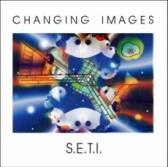
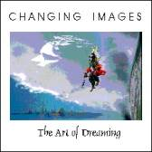
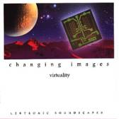
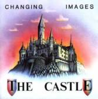

Click on highlighted tracks
to hear an excerpt from the original
track in
128 kB quality with your
browser mp3-plug-in *)
|
CD – Album |
Titel |
|
 |
1. Survey 2. Seti 3. Gates 6’40 4. Robot 5. Teleport 6. Planet Inca 7. Gates 2 Consciousness 6’11 8. Fear 9. Seti Warp |
|
 |
1. The Dreaming 14’41 |
|
 |
1. Change 6'41 2. Kyoto 5'32 3. Shivas Invention 6'20 4. But - I Know 7'04 5. Malaria 6'35 6. Lilith - the Black Moon 7'43 7. Cyberspace 7'20 8. Cloudwalk 5'59 9. The Moor 5'01 10. Dawn 8'57 |
|
 |
1. Ouverture 5´57 2. The Alley 5´02 4. Ballroom 3´38 10. The Garden 5´40 11. The
Knights 5´16 |
*)
Es gelten die Vorschriften des deutschen Urheberrechts in seiner jeweiligen
Fassung.
Alle Rechte der Urheber an den geschützten Werken, die auf der Website
enthalten
sind, bleiben vorbehalten. Ohne ausdrückliche Genehmigung durch die
GEMA
darf eine weitergehende Nutzung der Werke, über das Anhören der eingestellten
Musikwerke
hinaus, nicht erfolgen.
Copyright ©
2008 Changing Images. All rights
reserved, unauthorized copying or broadcasting prohibited.